Disciplinas
-
BANCO DE DADOS-T01-2024-1 Concluído
Materiais
Vídeo 2 - Bancos de Dados - Aula 03 – Modelo Entidade-Relacionamento (MER) - Parte II. sendProfessor ministrante: Sarajane Peres.
Conteúdo
Modelo Entidade-Relacionamento (MER).
- Relacionamentos.
- Cardinalidades.
Modelo Entidade-Relacionamento (MER).
Relacionamentos: representam as associações existentes entre as entidades.
Heurística: no discurso que descreve o mundo real, os relacionamentos são geralmente expressos por ações que envolvem entidades.
Contexto didático.
Uma empresa:(...) Um funcionário gerencia um departamento (...) Os departamentos possuem vários empregados e controlam uma série de projetos.
A gerência, a existência de empregados associados aos departamentos e o controle de projetos podem ser modelados como relacionamentos associados à entidade DEPARTAMENTO.
No diagrama ER, os relacionamentos são representados por losangos.
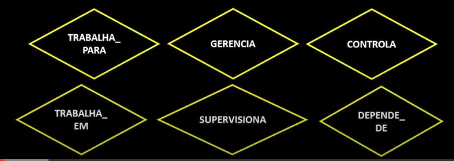 Conceitos:Um tipo relacionamento R entre n entidades, E1, E2, ..., En, define um conjunto de associações – ou um conjunto relacionamento - entre entidades desses tipos entidade.
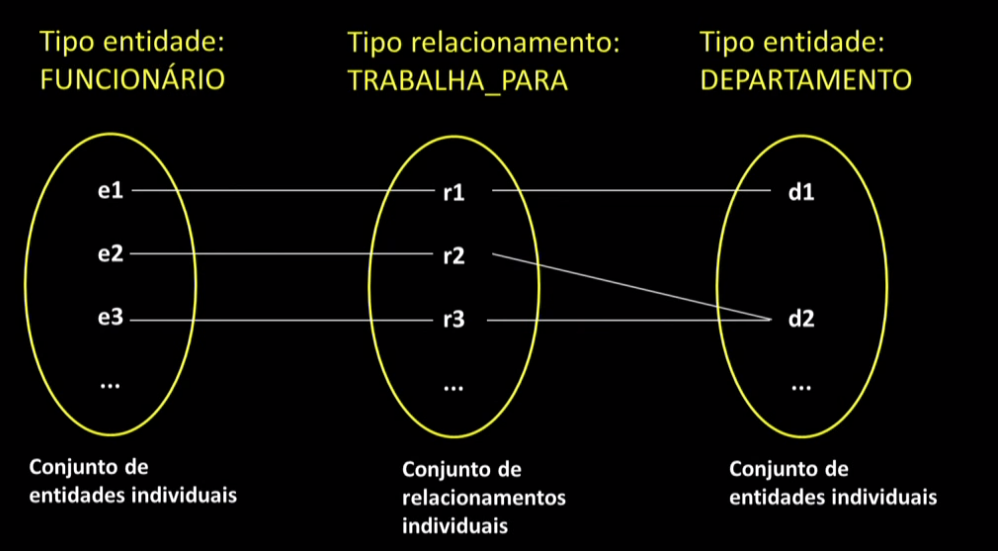- O grau de um tipo relacionamento é o número de tipos entidade participantes do relacionamento:
- binário (ou de grau dois).
- ternário (ou de grau três).
- n-ário (ou de grau n).
- Exemplo:
- um fornecedor fornece peças para um projeto. O relacionamento FORNECE envolve as entidades FORNECEDOR, PEÇA E PROJETO.
Ocorre quando um mesmo tipo entidade participa mais de uma vez do tipo relacionamento, assumindo papéis diferentes.
1- supervisor
2- supervisionado
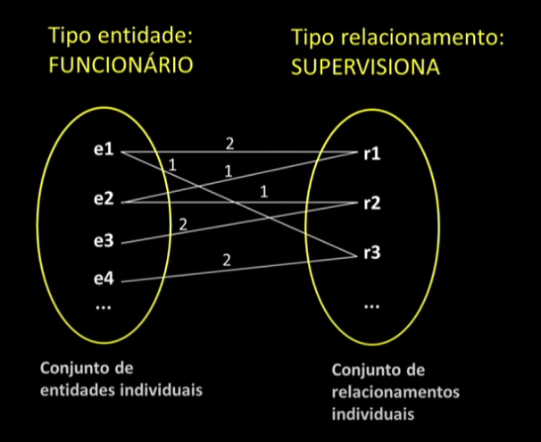Cardinalidade: especifica o número máximo de instâncias de relacionamento nas quais uma instância de entidade pode participar.
- 1:1 (um para um).
- 1:N (um para muitos), N:1 (muitos para um).
- M:N (muitos para muitos).
A cardinalidade está associada a um relacionamento e no diagrama ER é representada por 1, Me N (...) junto aos losangos.
1:1 (um para um): 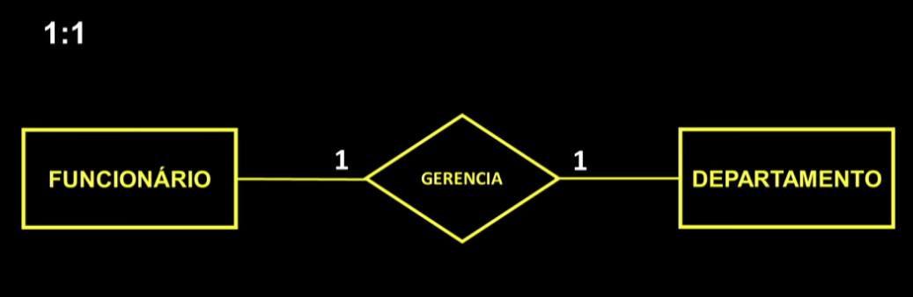 1:N (um para muitos), N:1 (muitos para um): 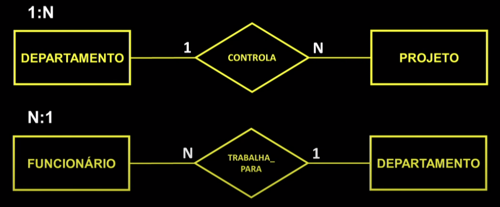 M:N (muitos para muitos): 1:N (recursivo) 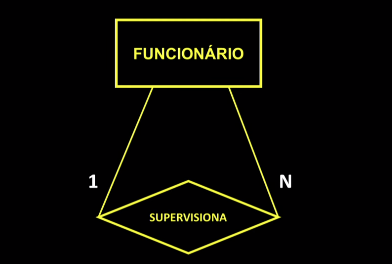 Restrição de participação:Especifica se uma entidade individual precisa, necessariamente, estar associada a outra entidade individual via um tipo relacionamento. Se a participação em um tipo relacionamento é obrigatória, ela é dita TOTAL, senão ela é dita PARCIAL.
No diagrama ER a participação total é representada por uma linha dupla que conecta o tipo entidade ao tipo relacionamento. A participação parcial é representada pela linha simples.
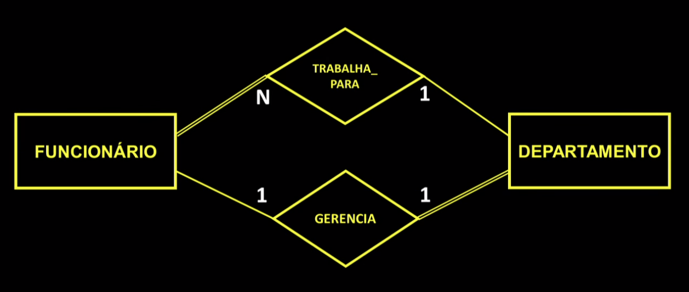Relacionamentos podem ter atributos. O atributo, nesse caso, é uma propriedade do relacionamento.
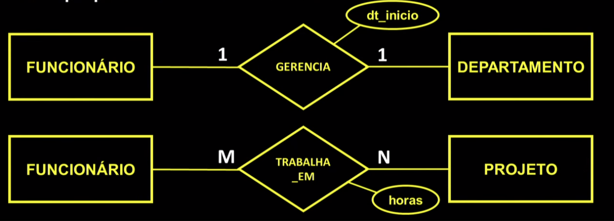Relacionamentos entre um tipo entidade fraca e um tipo entidade forte.
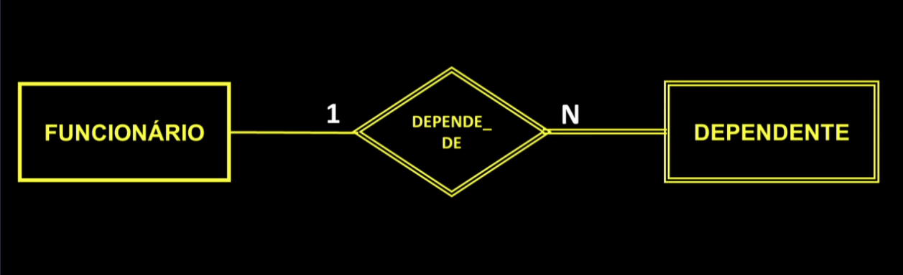Modelo de Entidade e Relacionamento Completo.
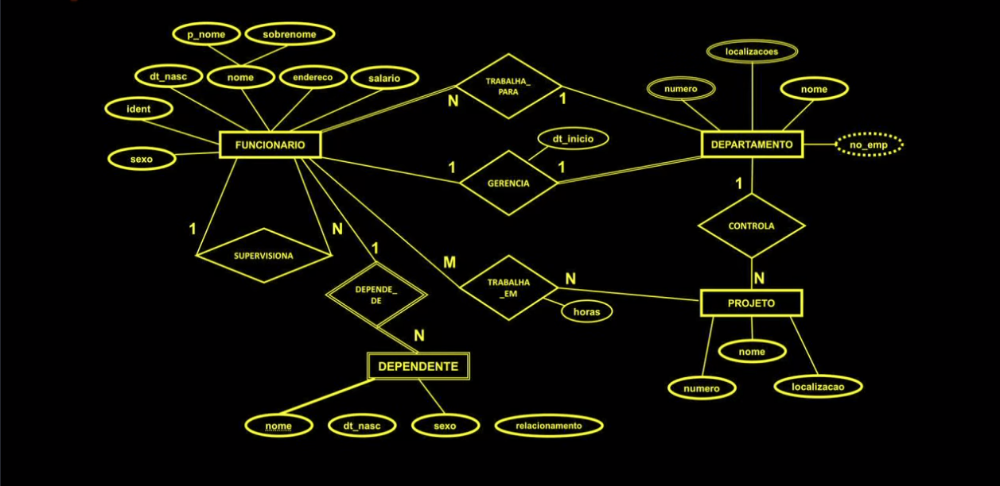Um exemplo de relacionamento ternário.

Cardinalidade MIN-MAX.
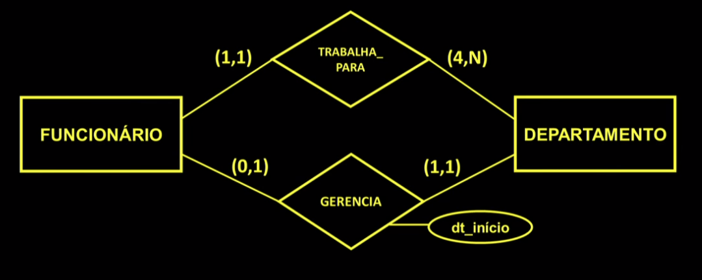Estes slides estão baseados na bibliografia:
Modelo Entidade-Relacionamento (MER) Parte II: relacionamentos, cardinalidades